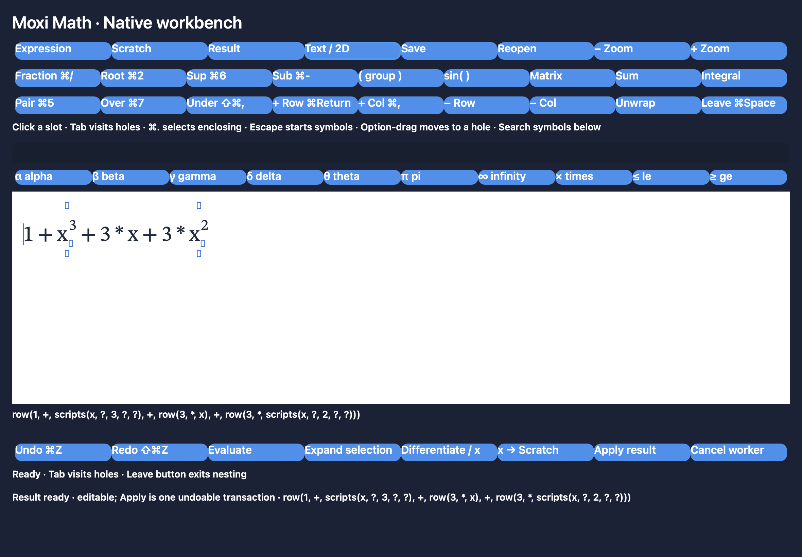
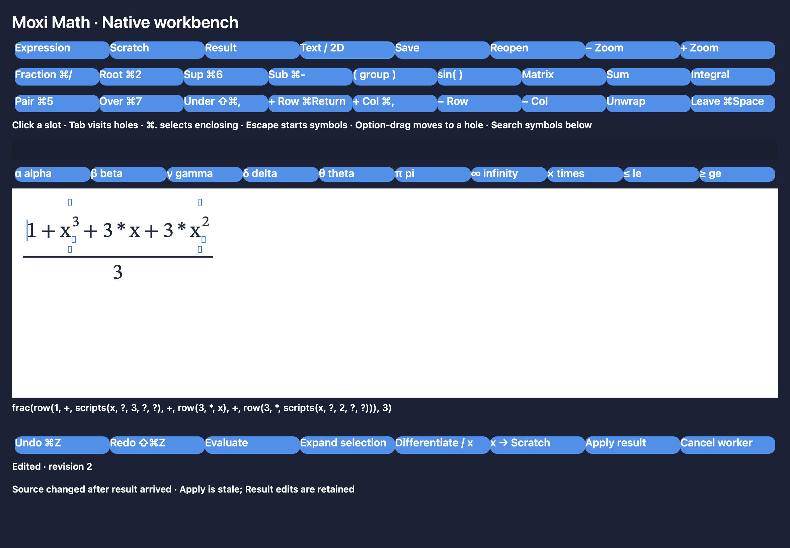
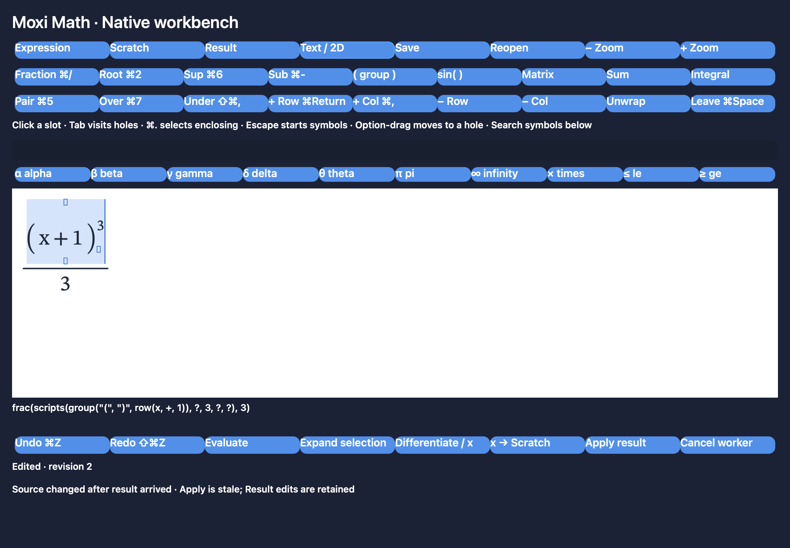
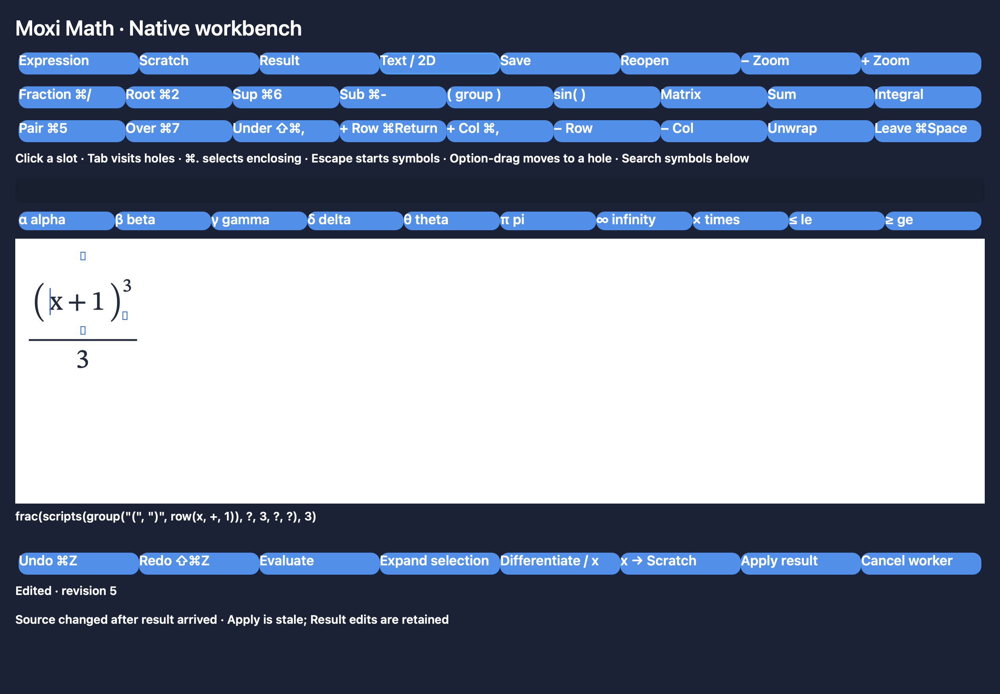

Rectangular matrix cells and new row · live AppKit content snapshot Action: Rectangular matrix cells and new row Expected: matrix(row(a, b), row(α, β), row(c, d))
Edit denominator while request runs; result is stale · live AppKit content snapshot Action: Edit denominator while request runs; result is stale Expected: frac(scripts(group("(", ")", row(x, +, 1)), ?, 3, ?, ?), 3)
recovery · offscreen-render · 2360 × 1640 pixels

Current selected-subtree result · live AppKit content snapshot Action: Current selected-subtree result Expected: row(1, +, scripts(x, ?, 3, ?, ?), +, row(3, *, x), +, row(3, *, scripts(x, ?, 2, ?, ?)))
result · offscreen-render · 2360 × 1640 pixels

Apply result to numerator · live AppKit content snapshot Action: Apply result to numerator Expected: frac(row(1, +, scripts(x, ?, 3, ?, ?), +, row(3, *, x), +, row(3, *, scripts(x, ?, 2, ?, ?))), 3)
result · offscreen-render · 2360 × 1640 pixels

Undo result application · live AppKit content snapshot Action: Undo result application Expected: frac(scripts(group("(", ")", row(x, +, 1)), ?, 3, ?, ?), 3)
recovery · offscreen-render · 2360 × 1640 pixels

Save and reopen exact notation · live AppKit content snapshot Action: Save and reopen exact notation Expected: frac(scripts(group("(", ")", row(x, +, 1)), ?, 3, ?, ?), 3)
result · offscreen-render · 2360 × 1640 pixels
Contact sheetReproduce
bash scripts/math/run.sh --capture artifacts/demo-slideshows/d02-native-math-editor; see source_provenance and frames.json fingerprint